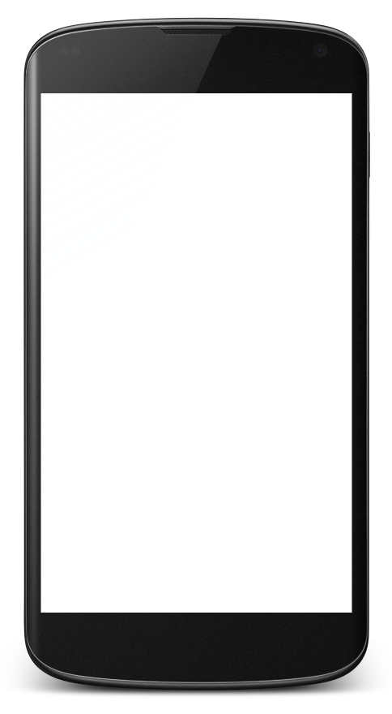
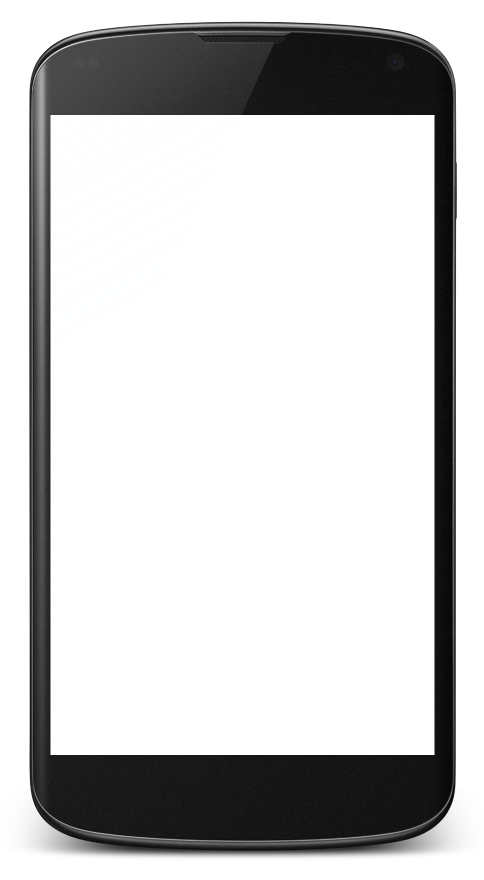

Maps API Battle on Android:
Web vs. App
Jan Stalhut, Steve Liedtke
04. Februar 2013
Übersicht
- Einführung
- Aufsetzen eines Projektes
- Grundlegende Funktionen
- Markierungen
- PAUSE
- Overlays
- Positionsanzeige
- Fazit
Einführung
Überblick (1/2)
- Erschienen am 8. Februar 2005 unter dem Namen Google Local
- Benutzt die Mercator-Projektion
- Verschiedene Ansichten:
- Straßenkarte
- Luftaufnahmen
- Luftaufnahmen mit Straßen
- Geländekarte
Überblick (2/2)
- Bekannt für:
- Street View
- Indoor Maps
- Navigation (Auto, Bahn, Fahrrad, zu Fuß)
- Google Map Maker
- Dienste von Google mit Verwandtschaft:
- Latitude
- Google Earth
APIs
- JavaScript API v3
- Android API v2
- SDK for iOS
- Google Places API
- Autocomplete API
- Distance Matrix API
- Latitude API
- Directions API
APIs (2/2)
- Static Maps API
- Street View Image API
- Google Maps Engine
- Earth API
- Elevation API
- Custom Street View API
- API für Unternehmen
Bedingungen und Preise
- "Ihr Google-Dienst muss für Endnutzer kostenlos und öffentlich zugänglich sein."
- Google Maps Quotas
- Routenplaner-Webdienst: 2500 Anfragen pro Tag mit 10 Wegpunkte pro Anfrage
- Höhendaten-Webdienst: 2500 Anfragen pro Tag mit 25.000 Stichproben pro Tag
- Static Maps API – maximale Auflösung: 640 x 640
- Keine Kontrolle über Werbeanzeigen
- etc.
- Google Maps API-Lizenzierung
Android API
- Version 2 wurde am 3. Dezember 2012 veröffentlicht
- Bringt etliche Verbesserungen
- MapFragment !!!!!
- Einfachere Handhabung
- Indoor Maps
- Traffic
- etc.
- Es können keine API Keys für Version 1 mehr erstellt werden!
- Google Maps Android API v2 - Dokumentation
Javascript API
- Version 3.9 frozen letzte Änderung am 20.11.2012
- Version 3.10 release wurde am 18.11.2012 veröffentlicht
- Laufend Updates mit Verbesserungen und Korrekturen, ca. wöchentlich, z. B.:
- Zusätzliche Sprach-Unterstützungen
- Indoor Street View
- Version 3.11 experimental, u.a. mit:
- Unterstützung für Geräte mit höherer DPI
- Poligone, Kreise, Rechtecke: dragable-option
- Dokumentation und deutschsprachiges Tuturial
Aufsetzen eines Projektes
JavaScript
- Einrichten einer Android-Entwicklungsumgebung
- Kein API Key (mehr) erforderlich
(wird jedoch von Google empfohlen zur Überwachung der Nutzung und Erreichen der Nutzungsbegrenzung)
JavaScript - Konfiguration
- Anderungen im Android Manifest
- Min-SDK sollte Froyo sein
<uses-sdk android:minSdkVersion="8"/>
- Berechtigungen müssen gesetzt sein
<uses-permission android:name="android.permission.INTERNET"/>
- Optionale Berechtigungen für Ortsbestimmung
<uses-permission android:name="android.permission.ACCESS_COARSE_LOCATION"/> <uses-permission android:name="android.permission.ACCESS_FINE_LOCATION"/>
- Min-SDK sollte Froyo sein
JavaScript - WebView
- WebView-Konfiguration
- Grundlegende Parameter
this.webview = (WebView) view.findViewById(R.id.webview); final WebSettings webviewSettings = this.webview.getSettings(); webviewSettings.setJavaScriptEnabled(true); webviewSettings.setGeolocationEnabled(true); if (Build.VERSION.SDK_INT >= 11) { this.webview.setLayerType(View.LAYER_TYPE_SOFTWARE, null); } this.webview.loadUrl("file:///android_asset/map/googlemap.html"); - Error-Handling / Debug-Meldungen
this.webview.setWebChromeClient(new WebChromeClient() { @Override public boolean onConsoleMessage(ConsoleMessage cm) { switch (cm.messageLevel()) { case DEBUG: Log.d("MapsWebView-DEBUG", cm.message() + " -- " + cm.lineNumber() + "@" + cm.sourceId()); break; // ... } return true; } }); - Abfragen zur Geoposition erlauben
this.webview.setWebChromeClient(new WebChromeClient() { @Override public void onGeolocationPermissionsShowPrompt(String origin, Callback callback) { // Allow always geolocation permissions for the webview. callback.invoke(origin, true, false); } }); - Java-Objekt für Call-Backs in JavaScript injezieren
this.webview.addJavascriptInterface(new JSInterface(), "androidapp"); // ... private class JSInterface { @JavascriptInterface public String getSomeString() { return "Hello World!"; } }
- Grundlegende Parameter
Android API - Projekt erstellen
- Einrichten einer Android-Entwicklungsumgebung
- Google Play Services muss im Android SDK Manager hinzugefügt werden
- Einbinden des Google Play Services SDK in die Entwicklungsumgebung
- Eclipse: File > Import > Android > Existing Android Code Into Workspace
- <android-sdk-folder>/extras/google/google_play_services/libproject/google-play-services_lib
Android API - Google Maps API Key
- Benötigt wird eine digitales Zertifikat (SHA-1 fingerprint)
- DEBUG-Fingerprint für Entwicklung
- RELEASE-Fingerprint für Veröffentlichung
- Erstellen des Zertifikats
- Erstellen eines API-Projektes
- Öffnen der Google APIs Console
- Erstellen eines neuen Projektes
- Aktivieren der 'Google Maps Android API v2' in Services
- Erstellen eines neuen Android Keys in API Access
Android API - Konfiguration (1/2)
- Änderungen im Android Manifest
- Min-SDK muss Froyo sein
<uses-sdk android:minSdkVersion="8"/>
- API Key muss hinterlegt sein
<meta-data android:name="com.google.android.maps.v2.API_KEY" android:value="_your_api_key_"/>
- Berechtigungen müssen gesetzt sein
<permission android:name="my.package.permission.MAPS_RECEIVE" android:protectionLevel="signature"/> <uses-permission android:name="my.package.permission.MAPS_RECEIVE"/> <uses-permission android:name="android.permission.INTERNET"/> <uses-permission android:name="android.permission.WRITE_EXTERNAL_STORAGE"/> <uses-permission android:name="com.google.android.providers.gsf. permission.READ_GSERVICES"/> - Optionale Berechtigungen für Ortsbestimmung
<uses-permission android:name="android.permission.ACCESS_COARSE_LOCATION"/> <uses-permission android:name="android.permission.ACCESS_FINE_LOCATION"/>
- Min-SDK muss Froyo sein
Android API - Konfiguration (2/2)
- Google Play Services SDK als Bibliothek einbinden
- In Eclipse: Properties des Projektes > Android > Library > Add...
- Auswählen des vorher importierten google-play-services_lib
Grundlegende Funktionen
Android
Android
FragmentTransaction transaction =
getFragmentManager().beginTransaction();
fragment = MyMapFragment.newInstance();
// alternativ
// fragment = MapFragment.newInstance();
transaction.add(R.id.singlefragment,
fragment, "mapFragment");
transaction.commit();
public class MyMapFragment extends MapFragment{
private GoogleMap map;
@Override
public void onStart() {
super.onStart();
map = super.getMap();
[..]
}
}
private void showStartPosition() {
CameraPosition.Builder positionBuilder =
new CameraPosition.Builder();
LatLng bremen =
new LatLng(53.075858, 8.80772);
positionBuilder.zoom(17.0f).target(bremen);
CameraUpdate update =
CameraUpdateFactory.newCameraPosition(
positionBuilder.build());
map.animateCamera(update);
}
private void chooseControls(){
UiSettings settings = map.getUiSettings();
settings.setTiltGesturesEnabled(true);
settings.setCompassEnabled(true);
settings.setZoomControlsEnabled(true);
// etc
}
private void chooseMapType() {
map.setMapType(GoogleMap.MAP_TYPE_NORMAL);
}
JavaScript
JavaScript
var map;
function initialize() {
var mapOptions = {
center : new google.maps.LatLng(
53.075858, 8.80772),
zoom : 17,
mapTypeId : google.maps.MapTypeId.HYBRID,
//TERRAIN, HYBRID, ROADMAP, SATELLITE
panControl : false,
zoomControl : true,
mapTypeControl : false,
scaleControl : false,
streetViewControl : true,
overviewMapControl : false
};
map = new google.maps.Map(
document.getElementById("map_canvas"),
mapOptions);
}
Markierungen
JavaScript
var marker;
function createMarker() {
marker = new google.maps.Marker({
position : landmarks[landmarksIndex].latlng,
map : map,
title : landmarks[landmarksIndex].name
});
}
function removeMarker() {
marker.setMap(null);
//or
marker.setVisible(false);
}
var infoWindow
function createInfoWindow() {
infoWindow = new google.maps.InfoWindow({
content : '<h1>Hier</h1>'
+ '<p>Weitere Informationen</p>'
});
google.maps.event.addListener(marker, 'click',
function() {
if (lastInfoWindow != null) {
lastInfoWindow.close();
}
infowindow.open(map, marker);
});
}
Android
private Marker marker;
private void createStandardMarker(){
final MarkerOptions options =
new MarkerOptions();
LatLng markerCood =
new LatLng(latitude, longitude)
options.position(markerCood)
.title("Normaler Marker")
.snippet("Das ist ein "+
+"normaler Marker");
marker = map.addMarker(options);
}
private void removeMarker(){
marker.remove();
}
private Marker marker;
private void createGreenMarker(){
final MarkerOptions options =
new MarkerOptions();
LatLng markerCood =
new LatLng(latitude, longitude)
options.position(markerCood)
.title("Grüner Marker")
.snippet("Das ist ein "+
+"grüner Marker")
.defaultMarker(
BitmapDescriptorFactory.HUE_GREEN));
marker = map.addMarker(options);
}
private class MyInfoWindowAdapter
implements InfoWindowAdapter {
// will be called first
@Override
public View getInfoWindow(Marker marker) {
return null;
}
// will be called second,
// after getInfoWindow returns null
@Override
public View getInfoContents(Marker marker) {
return getActivity().getLayoutInflater()
.inflate(
R.layout.info_content_layout, null);
}
}
Pause
Overlays
Android
private GroundOverlay groundOverlay;
private void showOverlay(){
BitmapDescriptor image =
BitmapDescriptorFactory
.fromResource(R.drawable.historisch);
LatLng southwest =
new LatLng(53.073409, 8.807302);
LatLng northeast =
new LatLng(53.076516, 8.812848);
LatLngBounds bounds =
new LatLngBounds(southwest, northeast);
GroundOverlayOptions options =
new GroundOverlayOptions().image(image)
.positionFromBounds(bounds)
.bearing(39.0f).transparency(0.3f)
groundOverlay =
map.addGroundOverlay(options);
}
private void removeOverlay(){
groundOverlay.remove();
}
JavaScript
var historicalGroundOverlay =
new google.maps.GroundOverlay(
"img/historisch.png",
new google.maps.LatLngBounds(
// southwest:
new google.maps.LatLng(
53.072559, 8.806052),
// northeast:
new google.maps.LatLng(
53.077416, 8.813648)
));
historicalGroundOverlay.setOpacity(0.7);
function showOverlay() {
historicalGroundOverlay.setMap(map);
}
function hideOverlay() {
historicalGroundOverlay.setMap(null);
}
Positionsanzeige
JavaScript
- ...
Android
public class MyMapFragment extends MapFragment
implements LocationSource, LocationListener{
private LocationManager locationManager;
[..]
private void connectMapWithLocation{
map.setMyLocationEnabled(true);
}
}
private void initLocationManager() {
locationManager =
(LocationManager) getActivity()
.getSystemService(
FragmentActivity.LOCATION_SERVICE);
if (locationManager != null) {
boolean gps = locationManager
.isProviderEnabled(
LocationManager.GPS_PROVIDER);
boolean network = locationManager
.isProviderEnabled(
LocationManager.NETWORK_PROVIDER);
if (gps) {
locationManager.requestLocationUpdates(
LocationManager.GPS_PROVIDER,
5000L, 10F, this);
} else if (network) {
locationManager.requestLocationUpdates(
LocationManager.NETWORK_PROVIDER,
5000L, 10F, this);
}
}
}
Fazit
Vergleich
- ...
Lust auf mehr?
- Google Maps SDK für iOS
- Open Street Maps für Android
- Weitere Kartendienste für Android
Du kennst einer dieser APIs? Dann bist du herzlichst eingeladen, sie bei einer der nächsten Stammtische vorzustellen
Vielen Dank für Eure Aufmerksamkeit!
- html5slides von Google
http://code.google.com/p/html5slides/ - Android-App WebKey
https://play.google.com/store/apps/details?id=com.webkey - ...
 
